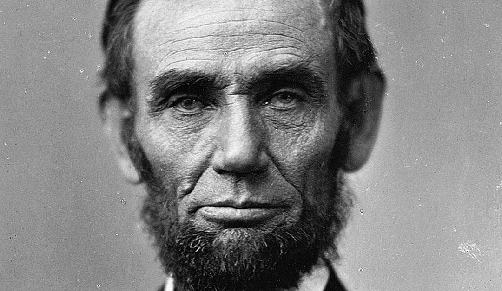

Abraham Lincoln
The man who fought for freedom and equality

Abraham Lincoln served as the 16th president of the United States of America, from 1861 until his assassination in 1865.
Here's a time line of Abraham Lincoln's life:
- 1809 - Born in Hardin County (now LaRue County), Kentucky, to Thomas Lincoln (1778-1851) and Nancy Hanks Lincoln (1784-1818)
- 1811 - Attended occasional classes in rural schoolhouse
- 1830 - Moved with family to Illinois, settling in Macon County
- 1831 - Helped build a flatboat and ferried cargo from Sangamon County, Illinois, to New Orleans, Louisiana
- 1832 - Elected captain, Thirty-first Regiment, Illinois Militia, in the Black Hawk War
- 1832 - Defeated in election for a seat in the Illinois General Assembly
- 1834 - Began to read law
- 1834 - Elected as Whig candidate from Sangamon County to the lower house of the Illinois General Assembly, which then met in Vandalia, Illinois
- 1836 - Licensed to practice law
- 1836 - Reelected for three additional terms, Sangamon County representative, Illinois General Assembly. He was one of the so-called "Long Nine" in the Sangamon delegation notable for above-average height and being instrumental role in moving the state capital to Springfield.
- 1837 - Moved to Springfield, Illinois, to become law partner with John T. Stuart in the firm of Stuart & Lincoln
- 1841 - Partnership of Stuart & Lincoln dissolved. Partnership established with Stephen T. Logan in the law firm of Logan & Lincoln, Springfield, Illinois; dissolved in 1844.
- 1846 - Elected from the Whig Party to the United States House of Representatives; assumed office in December 1847
- 1847 - Served single term representing Illinois in the U. S. House of Representatives, December 6, 1847-March 4, 1849. Lived in Mrs. Sprigg's Carroll Row boarding house on Capitol Hill.
- 1847 - Argued Matson Slave Case in which he represented a slave owner seeking to reclaim slaves used as seasonal labor in Illinois, where slavery was outlawed
- 1847 - Introduced "Spot Resolutions" in House of Representatives, challenging President James K. Polk to prove that the "spot" of land on which American blood had been shed (the event that prompted the United States to declare war on Mexico) had in fact been shed on American soil
- 1849 - Admitted to the bar of the United States Supreme Court
- 1849 - Declined appointment to be governor of the Oregon Territory
- 1860 - Nominated as Republican Party's candidate for president
- 1860 - Eleven-year-old Grace Bedell of New York suggested in a letter that Lincoln grow "whiskers" to improve the appearance of his thin face.
- 1860 - Elected president of the United States
- 1861 - Inaugurated sixteenth president.
- 1861 - Confederates in Charleston fired on Union-held Fort Sumter in Charleston Harbor, effectively starting the Civil War
- 1863 - Union victories at Gettysburg, Pennsylvania, on July 3, and Vicksburg, Mississippi, on July 4
- 1863 - Delivered Gettysburg Address at cemetery dedication in Gettysburg, Pennsylvania
- 1865 - U. S. House of Representatives passed joint resolution to U. S. Constitution to abolish slavery. The Senate had previously passed the resolution on April 8, 1864. Lincoln signed the official resolution, and several ceremonial copies. The amendment was then sent to the states for ratification, and became the Thirteenth Amendment in December.
- 1865 - Lincoln and Secretary of State William H. Seward met with Confederate representatives (including Vice President Alexander Hamilton Stephens) at Hampton Roads, Virginia, on February 3 to discuss possible peace terms.
- 1865 - Second inauguration
- 1865 - Visited Richmond, Virginia, after Confederate capital evacuated
- 1865 - Shot while attending a performance of "Our American Cousin" at Ford's Theatre. Removed to the Petersen boarding house across the street from the theater.
- 1865 - Died, 7:22 a.m.
-- New York Tribune, February 28, 1860
If you have time, you should read more about this incredible human being on his Wikipedia entry.